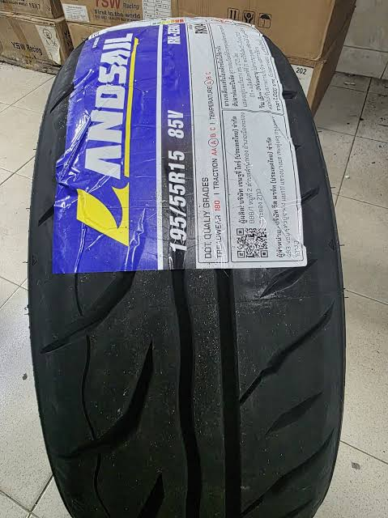

LANDSAIL REX KING RK-ZERO 195/55R15

RM 195.00
The Landsail Rex King RK-Zero is a high-performance semi-slick tyre designed for driving enthusiasts who demand strong dry grip, precise steering response and excellent cornering stability. Its aggressive tread design maximises road contact for enhanced traction and sporty handling. Ideal for performance-oriented vehicles and spirited driving. Key Features: • High-performance semi-slick tread design • Excellent dry grip and traction • Enhanced cornering stability • Precise steering response • Increased tyre-to-road contact area • Sporty handling and performance Specifications: • Size: 195/55R15 • Tyre Category: High Performance Semi-Slick • Speed Rating: V (240 km/h) • Treadwear: 180 (TW180) Note: Designed primarily for dry-road performance. Extra caution is required in heavy rain and standing water.
Klang Hock Li Tyre Services Sdn Bhd, Klang, Selangor, Malaysia.
View live product details and enquire